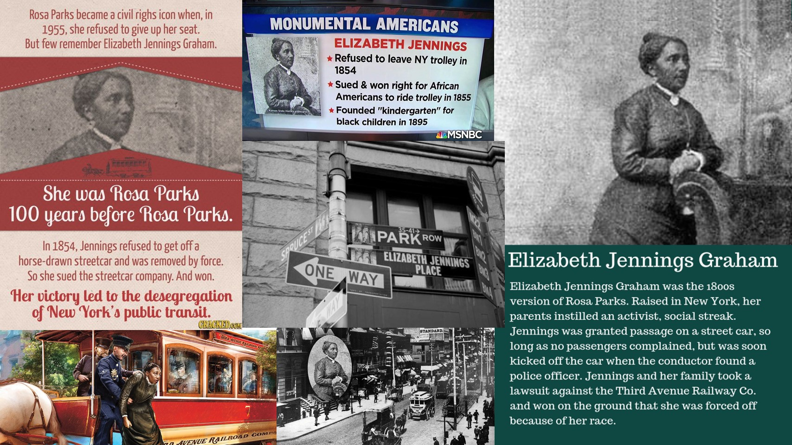
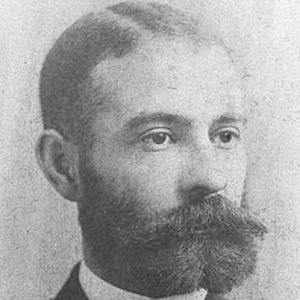
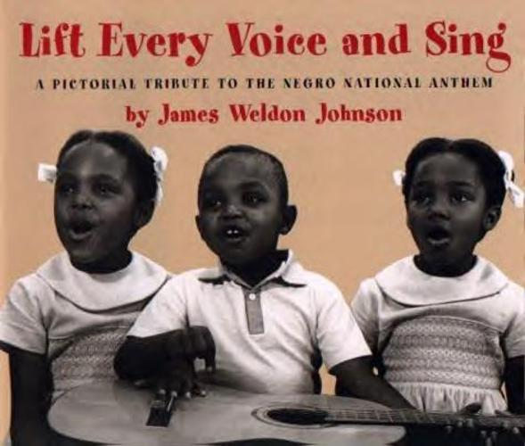

Black History
*************************************

Elizabeth Jennings Graham
(March 1824 June 5, 1901)
In the 1850s, the horse-drawn streetcar on rails became a more common mode of transportation, competing with the horse-drawn streetcar in the city. The streetcar lines were owned by private companies, and their owners and drivers could refuse service to any passengers and enforce segregated seating.
On Sunday, July 16, 1854, Jennings went to the First Colored Congregational Church, where she was an organist. As she was running late, she boarded a streetcar of the Third Avenue Railroad Company at the corner of Pearl Street and Chattham Street. The conductor ordered her to get off. When she refused, the conductor tried to remove her by force. Eventually, throwing her from about four feet above street level, she struck her head while landing. Not to be denied, she picked herself up and reboarded the streetcar. The passengers were apalled as the conductor sturggled with her. The conductor saw a police officer in passing and intersection and asked for assistance. The police officer asked if anyone other thatn the conductor wanted her removed from the car and received no response. The conductor with the aid of a police officer ejected Elizabeth once again from the moving streetcar.
The incident sparked an organized movement among black New Yorkers to end racial discrimination on streetcars, led by notables such as Jennings' father, Rev. James W.C. Pennington and Rev. Henry Highland Garnet. Her story was publicized by Fredrick Douglass in his newspaper, and it received national attention. Jennings's father filed a lawsuit (on behalf of his daughter) against the driver, the conductor, and the Third Avenue Railroad Company in Brooklyn, where the Third Avenue company was headquartered. This was one of four streetcar companies franchised in the city and had been in operation for about one year. She was represented by the law firm of Culver, Parker, and Arthur. Her case was handled by the firm's 24-year-old junior partner Chester A. Arthur, future presidtne of the United Stater.
In 1855, the court ruled in her favor. In his charge to the jury, Brooklyn Circuit Court Judge William Rockwell declared: "Colored persons if sober, well behaved and free from disease, had the same rights as others and could neither be excluded by any rules of the company, nor by force or violence."
The jury awarded Jennings damages in the amount of $250 (comparable to $6,000 to $10,000 in 2015 dollars) as well as $22.50 in costs. The next day, the Third Avenue Railroad Company ordered its cars desegregated.
As important as the Jennings case was, it did not mean that all streetcar lines would desegregate. Leading African-American activists formed the New York Legal Rights Association to continue the fight. In May 1855, James W. C. Pennington brought suit after being forcefully removed from a car of the Eighth Avenue Railroad, another of the first four companies. After steps forward and back, a decade later in 1865, New York's public transit services were fully desegregated.
She died on June 5, 1901, at the age of 74, according to her tombstone, and was buried in Cypress Hills Cemetery along with her son and her husband.
*********************************************************************
Retired Aug. 1980
Vice Adm. Samuel Lee Gravely, Jr. enlisted in the Navy Reserves on Sept. 15, 1942 and was trained as a fireman apprentice. In 1943 he participated in a Navy program (V-12) designed to select and train highly qualified men for commissioning as officers in the Navy. As part of his V-12 training, he attended the University of California in Los Angeles, Pre-Midshipman School in New Jersey and Midshipmen School at Columbia University, New York City. On Dec. 14, 1944, Gravely successfully completed midshipman training, becoming the first African American commissioned as an officer from the Navy Reserve Officer Training Course.
As a newly commissioned ensign, his first duty assignment was at Camp Robert Smalls as the assistant battalion commander for new recruits. Following that, he began his seagoing career as a sailor aboard the PC 1264, a submarine chaser that was one of only two World War II ships with a largely African American crew.
In April 1946 he was released from active duty, but remained in the Naval Reserve. He returned to his hometown of Richmond, Virginia, to complete his bachelor's degree in History.
Gravely was recalled to active duty in 1949. As part of the Navy's response to President Truman's executive order to desegregate the Armed Services, his initial assignment was as a Navy recruiter, recruiting African Americans in the Washington, D.C. area.
Gravely went from recruiting sailors to building a Navy career that lasted 38 years and included many distinguished accomplishments. Among those accomplishments, are a string of impressive "firsts" that include: the first African American to command a U.S. Navy warship ( USS Theodore E. Chandler); the first African American to command an American warship under combat conditions since the Civil War (USS Taussig); the first African American to command a major naval warship (USS Jouett); the first African American admiral; the first African American to rise to the rank of vice admiral; and the first African American to command a U.S. Fleet (Commander, 3rd Fleet).
Among Gravely's assignments were tours of duty aboard the following: PC-1264, USS Iowa (BB-61), USS Toledo (CA-133) and USS Seminole (AKA-104). He served as executive officer and commanding officer of the USS Theodore E. Chandler (DD-717). In addition, he was the commanding officer of the USS Falgout (DER-324), USS Taussig (DD-746) and USS Jouett (DLG-29). His last tour of duty, before retiring in August 1980, was as director of the Defense Communications Agency.
******************************************************
by Nannie Helen Burroughs
1. The Negro Must Learn To Put First Things First. The First Things Are: Education; Development of Character Traits; A Trade and Home Ownership.
• The Negro puts too much of his earning in clothes, in food, in show and in having what he calls “a good time.” The Dr. Kelly Miller said, “The Negro buys what he WANTS and begs for what he needs.”
2. The Negro Must Stop Expecting God and White Folk To Do For Him What He Can Do For Himself.
• It is the “Divine Plan” that the strong shall help the weak, but even God does not do for man what man can do for himself. The Negro will have to do exactly what Jesus told the man (in John 5:8) to do–Carry his own load–“Take up your bed and walk.”
3. The Negro Must Keep Himself, His Children And His Home Clean And Make The Surroundings In Which He Lives Comfortable and Attractive.
• He must learn to “run his community up”–not down. We can segregate by law, we integrate only by living. Civilization is not a matter of race, it is a matter of standards. Believe it or not–some day, some race is going to outdo the Anglo-Saxon, completely. It can be the Negro race, if the Negro gets sense enough. Civilization goes up and down that way.
4. The Negro Must Learn To Dress More Appropriately For Work And For Leisure.
• Knowing what to wear–how to wear it–when to wear it and where to wear it, are earmarks of common sense, culture and also an index to character.
5. The Negro Must Make His Religion An Everyday Practice And Not Just A Sunday-Go-To-Meeting Emotional Affair.
6. The Negro Must Highly Resolve To Wipe Out Mass Ignorance.
• The leaders of the race must teach and inspire the masses to become eager and determined to improve mentally, morally and spiritually, and to meet the basic requirements of good citizenship.
• We should initiate an intensive literacy campaign in America, as well as in Africa. Ignorance– satisfied ignorance –is a millstone about the neck of the race. It is democracy’s greatest burden.
• Social integration is a relationship attained as a result of the cultivation of kindred social ideals, interests and standards.
• It is a blending process that requires time, understanding and kindred purposes to achieve. Likes alone and not laws can do it.
7. The Negro Must Stop Charging His Failures Up To His “Color” And To White People’s Attitude.
• The truth of the matter is that good service and conduct will make senseless race prejudice fade like mist before the rising sun.
• God never intended that a man’s color shall be anything other than a badge of distinction . It is high time that all races were learning that fact. The Negro must first QUALIFY for whatever position he wants. Purpose, initiative, ingenuity and industry are the keys that all men use to get what they want. The Negro will have to do the same. He must make himself a workman who is too skilled not to be wanted, and too DEPENDABLE not to be on the job, according to promise or plan. He will never become a vital factor in industry until he learns to put into his work the vitalizing force of initiative, skill and dependability. He has gone “RIGHTS” mad and “DUTY” dumb.
8. The Negro Must Overcome His Bad Job Habits.
• He must make a brand new reputation for himself in the world of labor. His bad job habits are absenteeism, funerals to attend, or a little business to look after. The Negro runs an off and on business. He also has a bad reputation for conduct on the job–such as petty quarrelling with other help, incessant loud talking about nothing; loafing, carelessness, due to lack of job pride; insolence, gum chewing and–too often–liquor drinking. Just plain bad job habits!
9. He Must Improve His Conduct In Public Places.
• Taken as a whole, he is entirely too loud and too ill-mannered.
• There is much talk about wiping out racial segregation and also much talk about achieving integration.
• Segregation is a physical arrangement by which people are separated in various services.
• It is definitely up to the Negro to wipe out the apparent justification or excuse for segregation.
• The only effective way to do it is to clean up and keep clean. By practice, cleanliness will become a habit and habit becomes character.
10. The Negro Must Learn How To Operate Business For People–Not For Negro People, Only.
• To do business, he will have to remove all typical “earmarks,” business principles; measure up to accepted standards and meet stimulating competition, graciously–in fact, he must learn to welcome competition.
11. The Average So-Called Educated Negro Will Have To Come Down Out Of The Air. He Is Too Inflated Over Nothing. He Needs An Experience Similar To The One That Ezekiel Had–(Ezekiel 3:14-19). And He Must Do What Ezekiel Did.
• Otherwise, through indifference, as to the plight of the masses, the Negro, who thinks that he has escaped, will lose his own soul. It will do all leaders good to read Hebrew 13:3, and the first Thirty-seven Chapters of Ezekiel.
• A race transformation itself through its own leaders and its sensible “common people.” A race rises on its own wings, or is held down by its own weight. True leaders are never “things apart from the people.” They are the masses. They simply got to the front ahead of them. Their only business at the front is to inspire to masses by hard work and noble example and challenge them to “Come on!” Dante stated a fact when he said, “Show the people the light and they will find the way!”
• There must arise within the Negro race a leadership that is not out hunting bargains for itself. A noble example is found in the men and women of the Negro race, who, in the early days, laid down their lives for the people. Their invaluable contributions have not been appraised by the “latter-day leaders.” In many cases, their names would never be recorded, among the unsung heroes of the world, but for the fact that white friends have written them there.
The Negro of today does not realize that, but, for these exhibits A’s, that certainly show the innate possibilities of members of their own race, white people would not have been moved to make such princely investments in lives and money, as they have made, for the establishment of schools and for the on-going of the race.
12. The Negro Must Stop Forgetting His Friends. “Remember.”
• Read Deuteronomy 24:18. Deuteronomy rings the big bell of gratitude. Why? Because an ingrate is an abomination in the sight of God. God is constantly telling us that “I the Lord thy God delivered you” –through human instrumentalities.
• The American Negro has had and still has friends–in the North and in the South. These friends not only pray, speak, write, influence others, but make unbelievable, unpublished sacrifices and contributions for the advancement of the race–for their brothers in bonds.
• The noblest thing that the Negro can do is to so live and labor that these benefactors will not have given in vain. The Negro must make his heart warm with gratitude, his lips sweet with thanks and his heart and mind resolute with purpose to justify the sacrifices and stand on his feet and go forward– “God is no respector of persons. In every nation, he that feareth him and worketh righteousness is” sure to win out. Get to work! That’s the answer to everything that hurts us. We talk too much about nothing instead of redeeming the time by working. . . . .
Written in the 1900’s.
******************************************************

Daniel Hale Williams, born on January 18, 1856 in Hollidaysburg, Pennsylvania, was one of
the first Black/African-American physicians to perform open-heart surgery in the United
States. Throughout his life, he demonstrated courage and sacrifice, and did not let the
American institution of segregation—a state defined by the physical and social separation
of White and Black/African-American individuals and communities throughout the country—deter or define him. He was a strong man and fought to advance his beliefs and
influence individuals and communities in a positive manner.
Therefore, this essay is a tribute to William’s personal life, career, and legacy.
William’s was born in 1856 to Sarah Price Williams and Daniel Williams Jr. William’s father
(who later died from tuberculosis) primarily served as a barber in his local community,
and his mother (who remains unnamed), was of Scottish and Irish heritage. Growing up, William’s spent most of his time with his mother, brothers, and sisters. Eventually, the
children were split up because the mother could not afford to provide proper care to them.
As such, Williams was sent to live with his uncle in Baltimore, Maryland. Later on, he ran
away from his uncle’s home in Maryland to live with his sister in Illinois. Upon arriving in
Illinois, like his dad, William’s developed in interest in grooming hair and, thereafter,
decided to open his own barber shop.
William’s decision to move West facilitated the beginning of his career in medicine. After spending some time in Chicago, William’s met a physician there, Dr. Henry W. Palmer, who sparked his interest in medicine. For two years, William’s worked with Palmer and quickly learned the field and practice of medicine. In 1880, Daniel Hale Williams enrolled in the
Chicago Medical College to formalize his pursuit of medicine. It is worth noting that
during this time, many black doctors were not allowed to work in Chicago hospitals (or at
least Chicago hospitals serving predominantly White communities). As such, in 1891,
Williams opened the Provident Hospital, one of the first training hospitals for
Black/African-American nurses in the Chicago community. But this was just the start of his significant accomplishments. In 1893, William’s became the second person on record to successfully perform a pericardium surgery; in July of 1893, William’s successfully repaired
a torn pericardium for James Cornish; also, in 1893, Williams was made surgeon-in-chief
of Freedman’s Hospital in Washington D.C. Williams also achieved significant
accomplishments as a teacher in clinical surgery at the Meharry Medical College. In 1895,
he co-founded the National Medical Association for Black/African-American doctors. In
1913, he became a charter member and the first African American doctor in the
American College of Surgeons.
Williams has left behind a remarkable and memorable legacy. Stevie Wonder’s song
‘Black Man’ is a tribute to William’s life, work, and accomplishments. In 2002, Molefi Kete Asante listed Williams on the list of the 100 Greatest African Americans. Williams even
received honorary degrees from Howard and Wilberforce Universities. Also, in honor of his accomplishments, a Pennsylvania State Hospital marker was placed on the U.S. Route 22
in Hollidaysburg, Pennsylvania.
William’s life, career as a physician, and legacy has helped shape the life and outcomes of
the Black/African-American community and non-Black African-American communities.
His work is an inspiration to many and is a testament to the hard work, disposition, and diligence that he espoused for the cause of helping others. His work continues to
influence the practice of medicine and the fabric of life in America.
******************************************************

Background and Summary
"Lift Every Voice and Sing," also known as "The Negro National Anthem," was written as a poem by James Weldon Johnson and then set to music by his brother, John Rosamond Johnson, in 1900.
Life Every Voice and Sing was first performed in public in Jacksonville, Fla., as part of a celebration of Abraham Lincoln's commemorative birthday celebration on February 12, 1900. The anthem was performed by a choir of 500 schoolchildren at the segregated Stanton School, where James Weldon Johnson was principal.
Singing this song quickly became a means by which Blacks could demonstrate their patriotism and hope for the future of America. In calling for earth and heaven to "ring with the harmonies of Liberty," Black people subtly spoke out against racismand Jim Crow laws, especially with the rise in the number of lynchings at the turn of the century. In 1919, the National Association for the Advancement of Colored People adopted the song, calling it the Negro national anthem. By the 1920s, copies of "Lift Every Voice and Sing" could be found in Black churches across the country and were often pasted right into the hymnals.
n 1990, singer Melba Moore released a modern rendition of the song, which she recorded along with R&B artists such as, Anita Baker, Stephanie Mills, Dionne Warwick and Bobby Brown, as well as gospel artists BeBe and CeCe Winans, Take 6 and The Clark Sisters. Partly due to the success of this recording, “Lift Every Voice and Sing” was entered into the Congressional Record as the official African American National Hymn. The first verse is the most commonly heard of the lyrics.
“Lift Every Voice and Sing” Lyrics:
(Verse One)
Lift every voice and sing, 'til earth and heaven ring,
Ring with the harmonies of liberty;
Let our rejoicing rise, high as the listening skies,
Let it resound loud as the rolling sea.
(Chorus One)
Sing a song full of the faith that the dark past has taught us,
Sing a song full of the hope that the present has brought us;
Facing the rising sun of our new day begun,
Let us march on 'til victory is won.
(Verse Two)
Stony the road we trod, bitter the chastening rod,
Felt in the days when hope unborn had died;
Yet with a steady beat, have not our weary feet
Come to the place for which our fathers sighed?
(Chorus Two)
We have come over a way that with tears has been watered,
We have come, treading our path through the blood of the slaughtered,
Out from the gloomy past, 'til now we stand at last
Where the white gleam of our bright star is cast.
(Verse Three)
God of our weary years, God of our silent tears,
Thou who has brought us thus far on the way;
Thou who has by Thy might, Led us into the light,
Keep us forever in the path, we pray.
(Chorus Three)
Lest our feet stray from the places, our God, where we met Thee,
Lest, our hearts drunk with the wine of the world, we forget Thee;
Shadowed beneath Thy hand, may we forever stand,
True to our God, true to our native land.
******************************************************
longer give us honor.
Because we have lost the path our ancestors cleared kneeling
in perilous undergrowth, our children cannot find their way.
Because we have banished the God of our ancestors, our
children cannot pray.
Because the old wails of our ancestors have faded beyond our
hearing, our children cannot hear us crying.
Because we have abandoned our wisdom of mothering and
fathering, our befuddled children give birth to children they
neither want nor understand.
Because we have forgotten how to love, the adversary is within
our gates, and holds us up to the mirror of the world, shouting,
"Regard the loveless."
Therefore, we pledge to bind ourselves to one another
To embrace our lowliest,
To keep company with our loneliest,
To educate our illiterate,
To feed our starving,
To clothe our ragged,
To do all good things knowing that we are more than keepers
of our brothers and sisters.
We are our brothers and sisters.
In honor of those who toiled and implored God with golden
tongues, and in gratitude to the same God who brought us out
of hopeless desolation.
We make this pledge.
1914 - 2014
******************************************************
https://www.bing.com/videos/search?q=a+black+woman%27s+smile+video&FORM=VIRE1#view=detail&mid=B74862D2C99A8E2
1ADEDB74862D2C99A8E21ADED
******************************************************
Let us not forget our Legacy nor what others
stood for during the struggle.
Flickr: Black History Album
the 20th centruy. Stinney, an Afircan-American youth from South Carolina, was convicted of
the first -degree murder of two pre-teen white girls: 11 year old Betty June Binnicker, and
8 year old Mary Emma Thames, however, no physical evidence existed in the case and the sole
evidence against Stinney was the circumstantial fact the girls had spoken with Stinney and his
sister shortly before their murder and the testimony of three police officers who testified at
a trial which lasted barely two hours, that Stinney had confessed to the murders.
He was executed by electric chair.